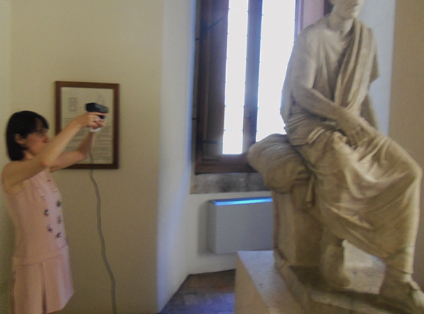
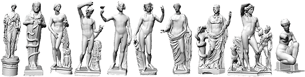
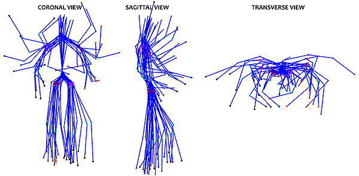

GAINESVILLE, Fla.
February 20, 2015.
How can you search for a statue in a database without using any keywords or textual metadata?
The DEA group in collaboration with the museum of Palazzo Altemps in Rome, Italy1 digitized in 3D statues from three of the collections housed in the museum: Boncompagni Ludovisi collection, Mattei collection, and Altemps collection. The digitization was performed using low-cost infrared depth sensors for iPad and XBOX by manually moving the sensor around the sculptures in order to capture their tridimensional form.

This process produced a dataset of 3D digitized statues with 3D point accuracy in the range of millimeters. In addition, a skeleton fitting process calculated the location of 20 major joints in the body of each statue. The goal of this project was to use the skeletal information of the statues in order to study the pose variations of the statues, calculate affinities or differences between statues, and perform keyword-free database search.

Digital technologies have been adopted in various areas related to museum experience, digital preservation, as well as digitization and study of archaeological artifacts. Digital collections become even more useful educationally and scientifically when they provide tools for searching through the collection and analyzing, comparing, and studying their records. For example an image collection becomes powerful if it can be searched by content, technique, pattern, color, or even similarity with a sample image. The lack of keywords and generalizable annotation for such type of analysis generates the need for keyword-free feature-based analysis.

The DEA group has designed a framework in which each statue is represented in a feature space based on the skeletal geometry of the human body. A distance function is defined in the feature space and is employed in order to find statues with similarities in their pose. The search query in the presented framework is the body of the user, who can interact with the system and find which statues have poses similar to the user's pose. The framework will be presented in the 17th International Confrence on Human-Computer Interaction to be held in Los Angeles, in August 2015.
This pilot project shows that the proposed framework2 can be used for keyword-free feature-based retrieval of statues in mobile devices. It has the potential to be used as a scientific tool for assisting scholars in identifying statues with similar characteristics from a large repository of statues, but also as an interactive guide in museums. The future use of depth sensors in mobile devices will significantly support the creation of such repositories of 3D digitized artifacts, using limited resources (in terms of scanning time, computational effort, and cost) as well as their computer-assisted study as demonstrated in detail in the published article by Barmpoutis et al2.
To learn more on how to use our open-access tools to digitize, analyze, and disseminate your own collection feel free to contact us or visit the web-site of the Digital Epigraphy and Archaeology project.
The DEA editorial team
References:
1. Museo Nazionale Romano di Palazzo Altemps, archeoroma.beniculturali.it/en/museums/national-roman-museum-palazzo-altemps.
2. A. Barmpoutis, E. Bozia, D. Fortuna, "Interactive 3D digitization, retrieval, and analysis of ancient sculptures, using infrared depth sensors for mobile devices ", 17th International Conference on Human-Computer Interaction, Los Angeles, August 2-7,
2015. PDF
Funded in part by the:
A. Rothman Fellowship in the Humanities from the Center for the Humanities and the Public Sphere at the University of Florida
B. and the Research Incentive Award from the College of the Arts at the University of Florida.
The images from our published article2 are shown with permission from the Italian Ministry of heritage, cultural activities and tourism. Su concessione del Ministero dei beni e delle attività culturali e del turismo - Soprintendenza Speciale per il Colosseo, il Museo Nazionale Romano e l'area archeologica di Roma.